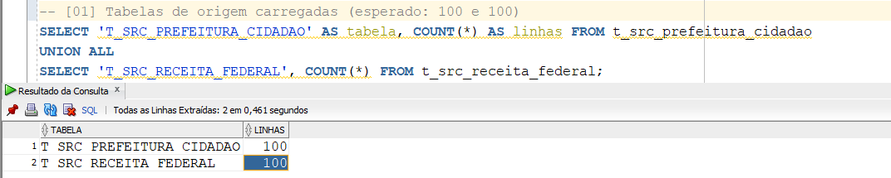
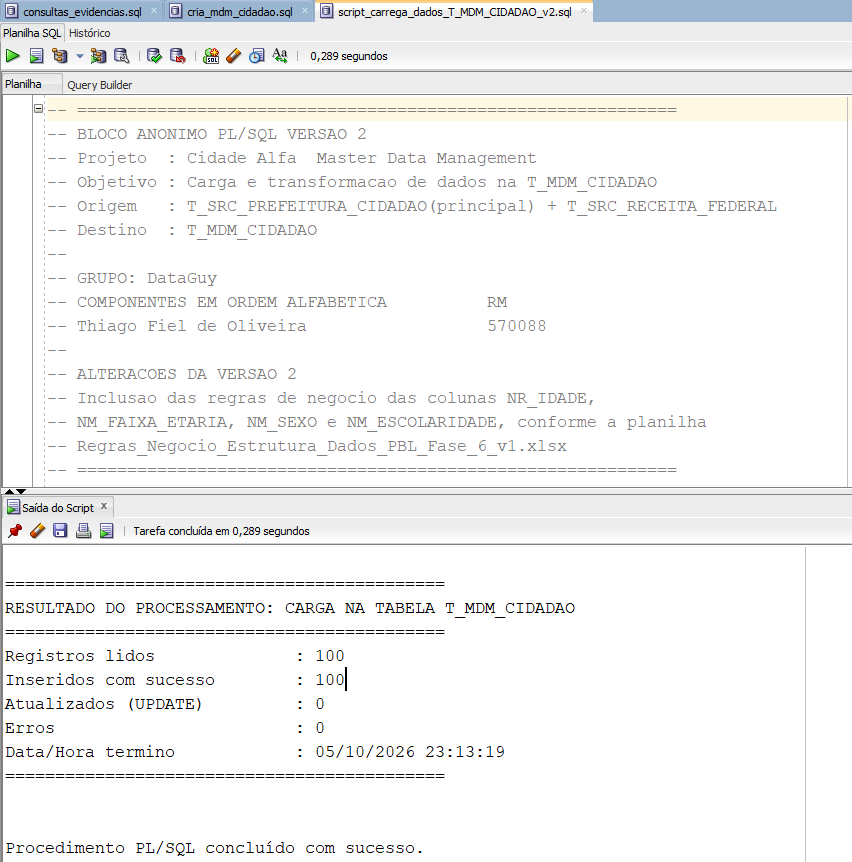
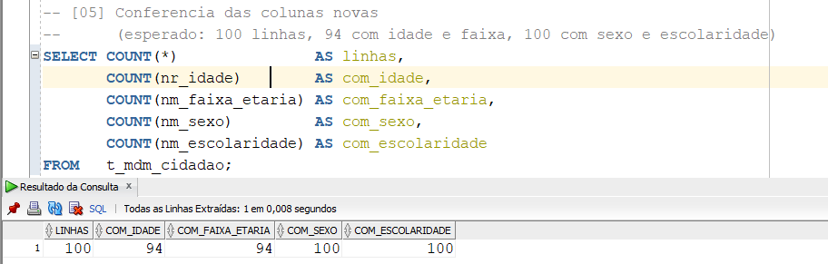
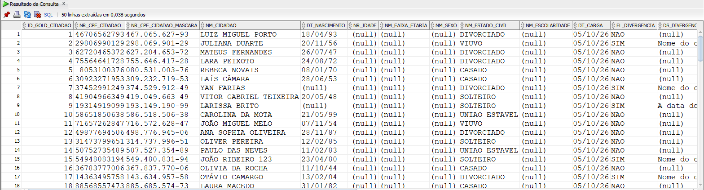
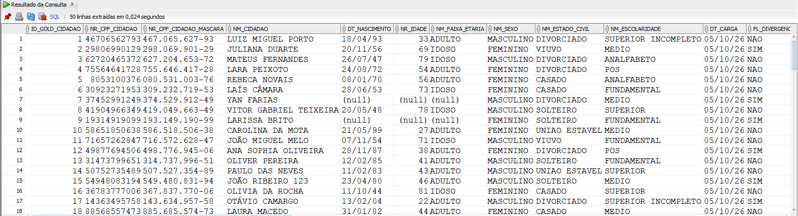
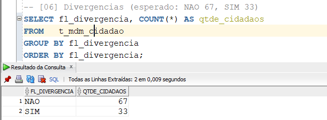
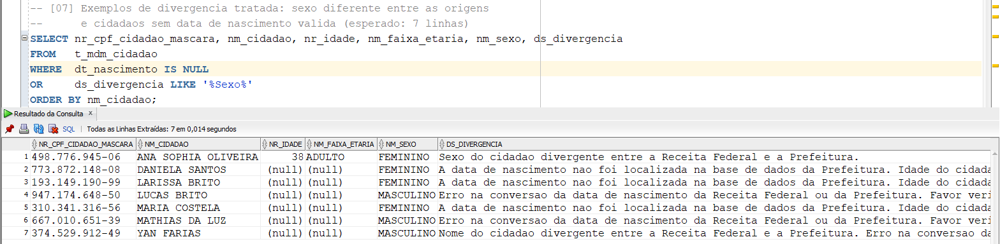
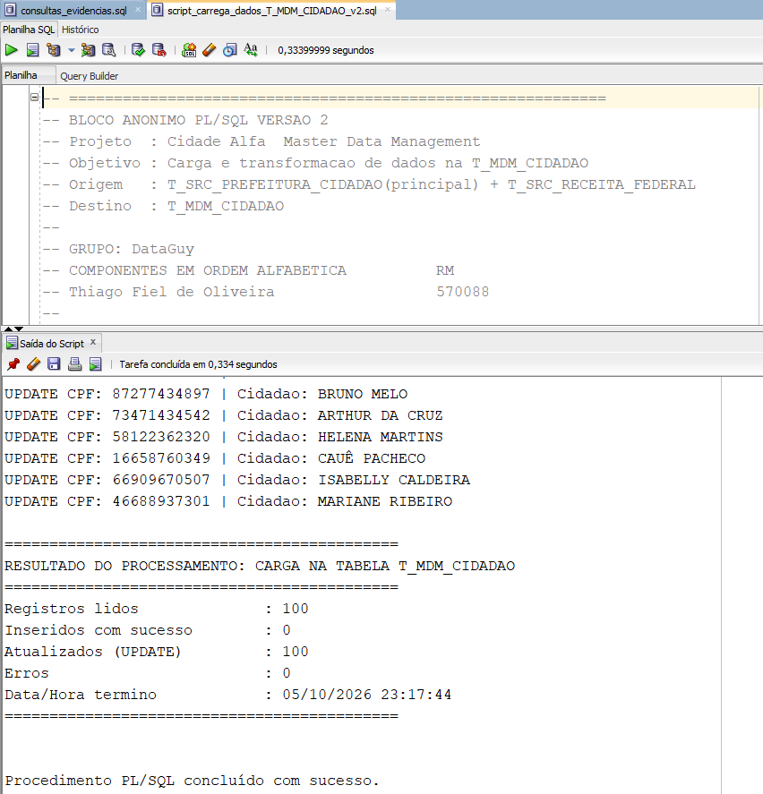
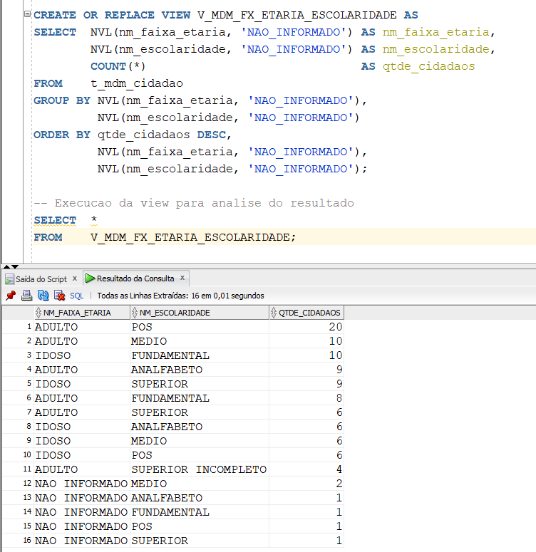

| Item | Definição |
|---|---|
| Desafio | Evoluir o Master Data Management (MDM) da cidade Alfa, consolidando o cadastro do cidadão a partir de dois sistemas legados |
| Grupo e integrante | DataGuy: Thiago Fiel de Oliveira, RM 570088, Turma 1TSCO |
| Origens de dados | SRC_PREFEITURA_CIDADAO.CSV e SRC_RECEITA_FEDERAL.CSV, com 100 cidadãos cada |
| Destino | Tabela de dados mestres T_MDM_CIDADAO, com um registro por CPF |
| Ambiente | SGBD Oracle da FIAP, acessado pelo Oracle SQL Developer (conexão ORACLE_FIAP_ON) |
| Execução das evidências | 05/10/2026 |
Tabela 1. Identificação da entrega. Fonte: elaborada pelo autor (2026).
Na cidade Alfa, o mesmo cidadão está cadastrado na Prefeitura Municipal e na Receita Federal. Os dois sistemas nasceram com objetivos diferentes e guardam o dado cada um do seu jeito: a data de nascimento vem em formatos distintos, o sexo usa códigos que não se correspondem e o nome aparece com título em um cadastro e sem título no outro.
Enquanto não existir uma versão única desse cadastro, qualquer indicador sobre a população parte de uma base frágil. O risco é concreto: benefício concedido em duplicidade, cidadão não localizado por divergência cadastral e programa social dimensionado para um público que não existe.
Consolidar as duas origens em um registro mestre por CPF, com regras de qualidade aplicadas em PL/SQL, e entregar à gestão pública uma visão analítica construída sobre esse registro.
script_carrega_dados_T_MDM_CIDADAO_v2.sql
Evolução do script v1 com as regras de idade, faixa etária, sexo e escolaridade.
cria_view_qtd_total_fx_etaria_escolaridade.sql
View lógica com a quantidade de cidadãos por faixa etária e escolaridade.
Antes de escrever qualquer regra, foi preciso entender o que cada origem traz e onde elas divergem.
Os dois arquivos CSV foram importados pelo assistente do SQL Developer para as tabelas T_SRC_PREFEITURA_CIDADAO e T_SRC_RECEITA_FEDERAL, sem nenhuma transformação. A área de stage guarda o dado exatamente como veio do legado, o que permite reprocessar a carga sempre que uma regra mudar.

Os 100 CPFs existem nas duas origens e no mesmo formato, o que torna o CPF uma chave segura para o cruzamento. O conteúdo das demais colunas, porém, apresenta os problemas resumidos a seguir. Cada um deles virou uma regra de tratamento no script de carga.
| Problema encontrado | Onde ocorre | Cidadãos | Tratamento no dado mestre |
|---|---|---|---|
| Data em formatos diferentes | Receita DD/MM/AAAA e Prefeitura MM/DD/AAAA | 100 | Conversão com a máscara de cada origem antes da comparação |
| Data inválida (99/99/9999) | Receita Federal | 3 | Data, idade e faixa etária ficam nulas e a divergência é registrada |
| Data em branco | Prefeitura | 3 | Data, idade e faixa etária ficam nulas e a divergência é registrada |
| Nome com título, incompleto ou com sufixo numérico | Prefeitura (SR., DRA.) e Receita (sufixo 123) | 27 | Prevalece o nome da Receita em maiúsculas e a divergência é registrada |
| Sexo em domínios incompatíveis | Receita F e M, Prefeitura 1 e 2 | 100 | Conversão para o domínio único MASCULINO e FEMININO |
| Sexo fora do domínio (valor 3) | Prefeitura | 1 | Prevalece a Receita e a divergência é registrada |
| Escolaridade com código numérico | Receita Federal (ex.: 4-POS) | 96 | Remoção do código e do hífen, mantendo o texto em maiúsculas |
| Escolaridade sem código | Receita Federal (SUPERIOR_INCOMPLETO) | 4 | Texto mantido como está |
Tabela 2. Problemas de qualidade identificados nas origens e o tratamento adotado. Fonte: elaborada pelo autor (2026), a partir da análise dos dois arquivos de origem.
Dois dos oito problemas só aparecem quando se olha o dado com atenção: o valor 3 no sexo da Prefeitura e os 4 registros de escolaridade sem código. Uma regra escrita só a partir da descrição da planilha, sem olhar o conteúdo, trataria errado justamente esses casos.
O script v1 do exercício guiado deixava quatro colunas em branco. A versão 2 preenche cada uma seguindo a planilha de regras de negócio.
O v2 parte do v1 e preserva tudo o que já funcionava: o cursor sobre a Prefeitura, a busca na Receita por CPF e as regras de nome, data de nascimento e estado civil. As alterações se concentram em quatro blocos novos de regra, colocados depois do tratamento da data de nascimento, porque idade e faixa etária dependem dela. As quatro colunas também foram incluídas no INSERT e no UPDATE.
| Coluna | Regra aplicada | Comportamento em caso de problema |
|---|---|---|
| NR_IDADE | Idade atual calculada com MONTHS_BETWEEN entre a data da carga e a data de nascimento | Sem data válida, ou com resultado fora de 0 a 130, grava nulo e registra a divergência |
| NM_FAIXA_ETARIA | CRIANCA até 11 anos, ADOLESCENTE de 12 a 17, ADULTO de 18 a 59 e IDOSO a partir de 60 | Sem idade calculada, grava nulo e registra a divergência |
| NM_SEXO | Receita como origem principal (F e M) e Prefeitura como conferência (1 e 2) | Em branco grava NAO_INFORMADO. Valor diferente entre as origens registra a divergência |
| NM_ESCOLARIDADE | Texto da Receita em maiúsculas, sem o código numérico e o hífen iniciais | Sem conteúdo na origem, a coluna fica em branco, sem divergência |
Tabela 3. Regras de negócio acrescentadas na versão 2 do script de carga. Fonte: elaborada pelo autor (2026), com base na planilha de regras do PBL.
-- Idade em variavel sem limite de tamanho, -- validada antes de ir para o registro v_idade := NULL; IF v_rec_mdm_cidadao.dt_nascimento IS NOT NULL THEN v_idade := TRUNC(MONTHS_BETWEEN(SYSDATE, v_rec_mdm_cidadao.dt_nascimento) / 12); IF v_idade NOT BETWEEN 0 AND 130 THEN v_idade := NULL; END IF; END IF;
Código 1. Cálculo da idade. O intervalo de 0 a 130 é o mesmo da constraint CK_MDM_IDADE.
ELSIF v_idade <= 11 THEN v_rec_mdm_cidadao.nm_faixa_etaria := 'CRIANCA'; ELSIF v_idade <= 17 THEN v_rec_mdm_cidadao.nm_faixa_etaria := 'ADOLESCENTE'; ELSIF v_idade <= 59 THEN v_rec_mdm_cidadao.nm_faixa_etaria := 'ADULTO'; ELSE v_rec_mdm_cidadao.nm_faixa_etaria := 'IDOSO'; END IF;
Código 2. Faixa etária em IF e ELSIF. Cada teste só verifica o limite superior, porque o anterior já eliminou os menores.
v_rec_mdm_cidadao.nm_escolaridade :=
REGEXP_REPLACE(UPPER(TRIM(v_rec_receita.ESCOLARIDADE)),
'^[0-9]+ *- *', '');
Código 3. Escolaridade: remove o código numérico e o hífen apenas quando existem no início do texto.
| Situação | Decisão e motivo |
|---|---|
| Faixa "bebê" (0 a 2 anos) | A planilha prevê essa faixa, mas a constraint CK_MDM_FAIXA_ETARIA da tabela não aceita o valor. Gravar BEBE interromperia a carga inteira, então a faixa de 0 a 2 anos é gravada como CRIANCA, com comentário no código. |
| Escolaridade sem código | A expressão regular só remove o prefixo quando ele existe. Um corte por posição fixa transformaria SUPERIOR_INCOMPLETO em PERIOR_INCOMPLETO. |
| Tipo da coluna de sexo | O TO_CHAR faz a comparação funcionar com a coluna importada como número ou como texto, o que depende de como o assistente de importação criou a tabela. |
| Comparação com nulo | O teste IS NULL explícito é o que captura o valor 3 da Prefeitura. Sem ele, a comparação com nulo não seria verdadeira e a divergência passaria despercebida. |
Tabela 4. Decisões tomadas durante a implementação. Fonte: elaborada pelo autor (2026).
Com a tabela de dados mestres recém-criada, o script v2 foi executado do início ao fim.
A tabela T_MDM_CIDADAO foi recriada pelo script cria_mdm_cidadao.sql e, em seguida, o v2 foi executado como script. O relatório impresso ao final do bloco PL/SQL confirma que os 100 registros lidos da Prefeitura foram cruzados com a Receita e inseridos, sem nenhuma atualização e sem nenhum erro.

A execução levou menos de um segundo e terminou com a mensagem de procedimento concluído com sucesso. Como a tabela estava vazia, todos os registros entraram pelo INSERT.
Nenhuma das constraints da tabela foi violada. Isso significa que todos os valores gravados de sexo, faixa etária e idade estão dentro dos domínios que a T_MDM_CIDADAO aceita.
Carregar sem erro não basta: é preciso confirmar que as colunas foram de fato preenchidas. A consulta abaixo conta quantos registros têm conteúdo em cada uma das quatro colunas novas.

Os 6 registros sem idade e sem faixa etária não são falha da carga. São exatamente os 6 cidadãos sem data de nascimento válida apontados no diagnóstico: 3 com 99/99/9999 na Receita e 3 com a data em branco na Prefeitura. A regra de negócio manda não calcular a idade nesses casos.
A comparação mais direta do que o v2 entrega é rodar a mesma consulta sobre a tabela carregada por cada versão.
Com o script original do exercício guiado, as colunas NR_IDADE, NM_FAIXA_ETARIA, NM_SEXO e NM_ESCOLARIDADE ficam nulas para todos os cidadãos.

Com a versão 2, as mesmas colunas passam a ter conteúdo tratado e dentro dos domínios aceitos pela tabela.

| Cidadão (linha) | O que a Figura 6 mostra | Regra confirmada |
|---|---|---|
| Luiz Miguel Porto (1) | 33 anos, ADULTO, SUPERIOR_INCOMPLETO | Escolaridade sem código numérico na origem foi mantida inteira |
| Juliana Duarte (2) | 69 anos, IDOSO, MEDIO | Faixa IDOSO a partir de 60 anos; o código 2-MEDIO virou MEDIO |
| Yan Farias (7) | Data, idade e faixa nulas, sexo MASCULINO | Data 99/99/9999 na Receita: a idade não é calculada, mas o sexo é preenchido normalmente |
| Ana Sophia Oliveira (12) | FEMININO, divergência passa de NAO para SIM | Sexo F na Receita e 3 na Prefeitura: prevalece a Receita e a divergência é registrada |
Tabela 5. Leitura de quatro registros que aparecem nas Figuras 5 e 6. Fonte: elaborada pelo autor (2026).
Antes do v2, a tabela de dados mestres não respondia quantos idosos a cidade tem, nem qual é a escolaridade da população. Depois do v2, responde.
Um dado mestre confiável não esconde os problemas das origens. Ele os registra, para que possam ser corrigidos onde nasceram.

Dos 100 cidadãos, 67 chegaram ao dado mestre com todas as informações coerentes entre as duas origens. Os outros 33 foram carregados, mas com a coluna FL_DIVERGENCIA igual a SIM e o motivo descrito em DS_DIVERGENCIA.
| Motivo da divergência | Cidadãos |
|---|---|
| Somente nome diferente entre as origens | 26 |
| Somente data de nascimento inválida ou ausente | 5 |
| Nome diferente e data inválida | 1 |
| Sexo diferente entre as origens | 1 |
| Total sinalizado | 33 |
Tabela 6. Composição dos 33 registros com divergência. Fonte: elaborada pelo autor (2026).
O script v1 já sinalizava 32 desses registros, por nome e por data. A regra de sexo do v2 acrescentou 1 caso que antes passava como registro limpo.
A consulta a seguir isola os 7 cidadãos alcançados pelas regras do v2: o caso de sexo divergente e os 6 sem data de nascimento válida. Em todos, a coluna DS_DIVERGENCIA explica o que aconteceu, e as mensagens se acumulam quando há mais de um problema no mesmo registro.

A divergência não é corrigida por adivinhação dentro do MDM. O registro é carregado com o melhor valor disponível, fica marcado e leva a descrição do problema. Com isso, a Secretaria sabe exatamente quais 33 cadastros precisam ser revistos nos sistemas de origem, e os 67 restantes podem ser usados com segurança.
Uma carga de dados mestres roda muitas vezes. O teste que faltava era executar o v2 de novo sobre a tabela já carregada.
O capítulo define que, quando o cidadão já existe no dado mestre, todos os seus dados cadastrais devem ser atualizados. No script, isso acontece quando o INSERT esbarra na chave única do CPF e a exceção DUP_VAL_ON_INDEX desvia o fluxo para o UPDATE.
Sem recriar a tabela, o v2 foi executado pela segunda vez. O resultado foi o esperado: nenhum registro novo e 100 atualizações.

As quatro colunas novas precisavam entrar em dois lugares do script: na inserção e na atualização. Se ficassem só no INSERT, a primeira carga funcionaria normalmente e o defeito só apareceria na segunda, quando o cidadão seria atualizado com idade, faixa etária, sexo e escolaridade antigos.
A tabela continua com 100 registros, um por CPF, e a coluna DT_CARGA passa a refletir a execução mais recente. A carga pode ser repetida sempre que as origens mudarem, sem gerar duplicidade.
Com o dado mestre preenchido, a pergunta da área de negócio passa a ter resposta em uma única consulta.
A view V_MDM_FX_ETARIA_ESCOLARIDADE lê a tabela de dados mestres e devolve a quantidade de cidadãos em cada combinação de faixa etária e escolaridade. Por ser uma view lógica, ela não armazena dado: cada consulta reflete a carga mais recente.
CREATE OR REPLACE VIEW V_MDM_FX_ETARIA_ESCOLARIDADE AS SELECT NVL(nm_faixa_etaria, 'NAO_INFORMADO') AS nm_faixa_etaria, NVL(nm_escolaridade, 'NAO_INFORMADO') AS nm_escolaridade, COUNT(*) AS qtde_cidadaos FROM t_mdm_cidadao GROUP BY NVL(nm_faixa_etaria, 'NAO_INFORMADO'), NVL(nm_escolaridade, 'NAO_INFORMADO') ORDER BY qtde_cidadaos DESC, NVL(nm_faixa_etaria, 'NAO_INFORMADO'), NVL(nm_escolaridade, 'NAO_INFORMADO');
Código 4. Instrução que cria a view, disponível no arquivo cria_view_qtd_total_fx_etaria_escolaridade.sql.
Ordenação. A visão é ordenada da maior para a menor quantidade, para que os maiores grupos da população apareçam primeiro, como na view de estado civil do exercício guiado. Faixa etária e escolaridade entram como desempate, o que mantém sempre a mesma ordem entre grupos de mesmo tamanho.
Nulos. Os 6 cidadãos sem faixa etária aparecem como NAO_INFORMADO. Assim ninguém some da contagem e a soma da view é igual ao total da tabela: 100.

| Achado | Leitura e possível direcionamento |
|---|---|
| Adultos com pós-graduação | São 20 dos 57 adultos (35%). É o maior grupo da cidade e um público de alta qualificação, pouco dependente de programas de formação básica. |
| Idosos com baixa escolaridade | Dos 37 idosos, 10 têm ensino fundamental e 6 são analfabetos, o que soma 16 pessoas (43%). É o público natural de ações de alfabetização e de inclusão digital para a terceira idade. |
| Adultos analfabetos | São 9 pessoas em idade de trabalho. Programas de educação de jovens e adultos e de capacitação profissional alcançam diretamente esse grupo. |
| Faixa etária não informada | Enquanto a data de nascimento não for corrigida na origem, esses 6 cidadãos ficam fora de qualquer política definida por idade. |
Tabela 7. Leitura dos principais grupos da view. A massa de dados é fictícia e tem 100 registros: os percentuais ilustram o tipo de análise que a visão permite. Fonte: elaborada pelo autor (2026).
A fase partiu de uma pergunta: um único registro por cidadão pode sustentar decisões públicas? A resposta é sim, com uma condição.
| Solicitação do PBL | Como foi atendida | Evidência |
|---|---|---|
| Gerar a versão 2 do script, com as regras de idade, faixa etária, sexo e escolaridade | script_carrega_dados_T_MDM_CIDADAO_v2.sql, em pleno funcionamento | Figuras 3, 4 e 6 |
| Colunas que estavam nulas devem aparecer com conteúdo significativo | Sexo e escolaridade em 100 registros; idade e faixa em 94, com os 6 restantes justificados | Figuras 4, 5 e 6 |
| Atualizar os dados do cidadão já cadastrado | Segunda execução com 100 atualizações e nenhuma duplicidade | Figura 9 |
| Identificar os componentes do grupo no início do script | Cabeçalho com grupo, nome e RM | Figura 3 |
| Construir a view por faixa etária e escolaridade, executar e gerar evidência | cria_view_qtd_total_fx_etaria_escolaridade.sql | Figura 10 |
Tabela 8. Rastreabilidade entre o que o PBL solicita e o que foi entregue. Fonte: elaborada pelo autor (2026).
O registro único funciona como base de decisão porque ele não trata todos os cadastros como igualmente confiáveis. Dos 100 cidadãos, 67 são registros sem nenhuma divergência entre as origens. Os outros 33 estão no dado mestre, mas identificados, com o motivo escrito ao lado. Essa é a condição: a confiança vem da transparência sobre a qualidade, e não da ausência de problemas.
O efeito prático aparece na view. Com quatro colunas a mais, a mesma tabela que antes só informava o estado civil passou a mostrar onde estão os idosos com baixa escolaridade e os adultos que ainda não foram alfabetizados, que são os públicos que um programa social precisa encontrar.
| Ponto | Observação |
|---|---|
| Nomes com sufixo numérico | Quatro nomes vêm da Receita com "123" ao final. Como a Receita é a origem principal do nome, esse texto chega ao dado mestre. Os registros ficam sinalizados, mas a correção definitiva depende da origem. |
| Idade é uma fotografia | A idade é calculada na data da carga e registrada em DT_CARGA. Para se manter atual, a carga precisa ser repetida periodicamente. |
| Faixa de 0 a 2 anos | Para registrar "bebê" como faixa própria, a constraint da tabela precisaria ser ampliada. Nesta massa não há cidadãos com menos de 22 anos, então o resultado não é afetado. |
Tabela 9. Limites da solução nesta fase. Fonte: elaborada pelo autor (2026).
O UrbanIQ prioriza e encaminha chamados urbanos abertos por cidadãos. Um cadastro mestre confiável é o que permite, mais adiante, ligar cada chamado a um cidadão único e entender quem a cidade está atendendo. Na Fase 7, o bloco anônimo desta entrega evolui para blocos nomeados em PL/SQL, o que torna a carga reutilizável e agendável.
Dois cadastros que não concordavam viraram um registro por cidadão, com a qualidade de cada um declarada, e esse registro já responde a uma pergunta real da gestão pública.